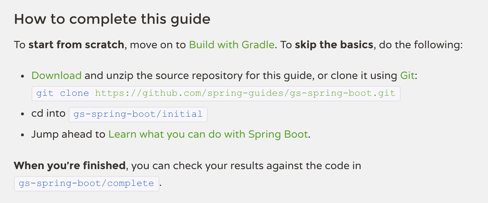
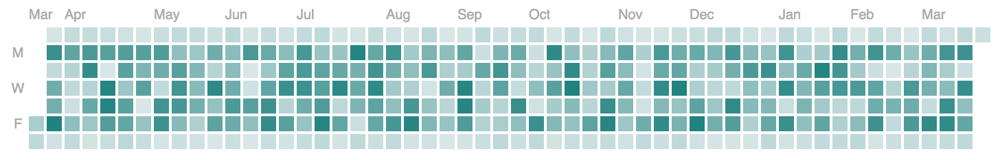

7 More Brain Hacks to Write Fluently Your brain is, and always will be, a tyrant that holds your ideas hostage.
But, like all computers, your brain can be hacked.
Let’s find out how to set those ideas free by coercing your brain to yield to your creative will.
My name is Dan Allen and I’m one of the cofounders of OpenDevise.
I’m passionate about creating tools and services that help organizations deliver better documentation.
Last year, I was here at Devoxx Morocco to offer seven ways to help you write fluently.
You can find a video of that talk on the Devoxx YouTube channel.
Today, I’ll share with you seven more brain hacks, some of which relate to or extend from that first set.
Let’s get started.
= Documentation Collaboration: Offload
:hardbreaks:
collaborating is a pain
leads to frustration with a capital F
sharing files over email is tedious, imprecise, inefficient
author/accountability lost
edits must be manually evaluated/reviewed
integration into the final document :-/
tools don't provide versioning and merging
group can't see who's working on the files
files get out of sync
what changed?
versions diverge => merge nightmare (>_<)
deciding to buy and install CMS
...Open up a text editor and write down everything that comes to mind about your topic.
Put each thought on a line by itself, as shown in this example.
Don’t format.
Don’t edit.
Resist the temptation to write in complete sentences.
Lines should read more like bullet points.
Aim to keep lines shorter than the screen width.
So what do you put in this file?
Facts, points you want to make, supporting quotes, concepts, terms and definitions, instructions, examples you’ll need, etc.
The purpose of this practice is to capture your ideas without committing to a particular narrative.
It takes the burden of having to remember all these thoughts off your mind and gives your brain space to think.
And you’re laying out everything in front of you so you can later rearrange the information and allow a story to emerge.
It will also become clear where the gaps are in your understanding or the storyline so you know what else to research.
The term for this step is “free writing”.
Though, perhaps we should call “free typing”.
In my experience, free typing kicks off a background process in my brain that continues digging for new ideas and connections.
I’ll repeatedly return to my computer or send myself an email to contribute to this cache as thoughts pop into my head.
My theory is that once your brain has a place to stash stuff, it commits to collecting and organizing it.
Once you have this cache of information, print it out so you can review it.
Circle lines that represent the most important points.
These are your big ideas.
Then, go back to the original document and make section titles for each of these points.
= Better Collaboration Leads to Better Docs
Sarah White
v1.0.0
Why is it so difficult to collaborate on documentation?
We believe it's because collaboration procedures are often accidental.
Managing collaboration as a core requirement leads to a better content workflow.
== Traditional file sharing is tedious, imprecise & inefficient
When a team uses tools that don't provide versioning and merging to collaborate on documentation, the team members can't see who is working on the files, the files get out of sync, authorship and accountability are lost, and edits have to be manually evaluated and integrated into the final document.
When the body of documentation becomes too difficult to manage using these informal methods, many businesses decide to buy a content management system (CMS).
However, a CMS is typically expensive, requires a lot of special knowledge and training, may not integrate with the publishing and distribution platforms the business uses, and can be difficult to customize to the team's workflow.
Additionally, a CMS still may not provide a solution for all of the team's collaboration requirements, uses, or tasks.
== A CMS isn't a silver bullet solution
CMSs are typically expensive and monolithic.
They may be good at providing a workflow but they may not assign authorship to integrated content, they may let people edit but not leave notes, they may make editing in situ impossible, they may not track analytics, they may not provide indexes that allows content to be tagged, easily found and used in other outputs, they may not track where the content is being used and offer suggestions or warnings about its state to writers, editors, managers and users.
And due to their inflexibility, it is difficult to customize the CMS to the team's desired specifications which means they will still have to use other tools to complete their work.
Additionally, subject matter experts (SMEs) and other collaborators not directly writing the documentation may find the CMS a barrier to entry due to security protocols or the inability to use the CMS without extensive training.
== It's a problem when SMEs can't access the CMS or use it well
If all of the people needed to create and write quality documentation do not have access to the CMS, the team will still suffer from the same frustrations of an email, non-version, non-merge system as well as inefficiency and ineffectiveness caused by a CMS that doesn't adequately match the documentation and business requirements of the writing team.
== Collaboration on documentation is business requirement
An easy to learn, use and manage collaboration system is a business requirement because if all of the people who need to be involved in the planning, drafting and finalization of the the documentation content can't work together efficiently and accurately they'll become disengaged and frustrated.
In turn, these difficulties and the feelings they cause will impact the quality of the content (inaccurate information, out-of-date information, poorly organized and written content, incomplete content) which will make people even less likely to work on it or use it.
Poor quality documentation directly impacts the adoption of the company's software, and then its reputation and success.
== Takeaway
Putting in place all of the documentation team's collaboration requirements without undo complexity and with respect to how the team works leads to quality content.
Each person who touches the content feels relaxed, secure and engaged in the creation process.
...Organize the remaining lines under these sections.
Throw out any lines that don’t fit in these big ideas.
Fold points into sentences.
Let the story the content wants to tell emerge.
Congratulations!
You now have a first draft of your document done.
Fill in the blanks Hack #2: Fill in the blanks.
Another path you can take to get to a first draft is to begin with a template, then just fill in the blanks.
= Q: What is the project's name?
//Q: Why does this project exist?
== Q: What do I need to get started?
== Q: How do I install it?
== Q: Can you show me how it's used?
== Q: How do I contribute?
== Q: Who wrote it? What's the license?This approach works particularly well for technical documentation such as a tutorial, guide, or README.
We can build on the “Answer a question” brain hack from part 1 by making the template an outline of questions.
With the outline already set, you can focus your brain power on the responses.
The pre-defined structure also reminds you not to leave out a topic or critical step and it encourages consistency from one project to another.
= ACME Widget Factory
This project is a software library for building widgets.
== Prerequisites
== Installation
== Usage
== How to Contribute
== About this ProjectOnce you’re done filling out this questionnaire, simply swap each question with a statement or topic and, voila, your first draft is done!
Each time you fill in the blanks, you’ll gain new insights about how to improve the template.
For instance, you’ll discover sections that are missing, better ways to phrase the questions, or identify additional common elements you can move to the template.
If you continuously invest these changes back into the template, the practice of filling in the blanks gets easier each time, and gets you to a first draft quicker.

The Spring team realized that certain content is so stable and so boilerplate that it’s possible to fill in the blanks using a form of mail merge called “content macros”.
Here we see a section common to many of their getting started guides.
To prepare this section, they assign values to pre-defined content attributes in the document header.
== How to complete this guide
To *start from scratch*, move on to <<scratch>>.
To *skip the basics*, do the following:
* https://github.com/spring-guides/{project_id}/archive/master.zip[Download] and unzip the source repository for this guide, or clone it using git:
$ git clone https://github.com/spring-guides/{project_id}.git
* cd into `{project_id}{initial}`
* Jump ahead to <<initial>>.
*When you're finished*, you can check your results against the code in `{project_id}{complete}`.The Spring team realized that certain content is so stable and so boilerplate that it’s possible to fill in the blanks using a form of mail merge called “content macros”.
Here we see a section common to many of their getting started guides.
To prepare this section, they assign values to pre-defined content attributes in the document header.
= Building an Application with Spring Boot
:project_id: gs-spring-boot
:java_version: 1.8
:uri-content-macros: https://raw.githubusercontent.com/spring-guides/getting-started-macros/master
:initial: /initial
:complete: /complete
== What You'll Need
include::{uri-content-macros}/how_to_complete_this_guide.adoc[]They then import the shared templates into the main document using the include directive.
The processor automatically populates these templates and weaves the result into the published document.
If you think about it, the fastest way to write content is to not have to write the content at all!
Not only do content macros save a lot of effort, they also shift the responsibility of maintaining that portion of the content to the content owner.
And since the content is centralized, updates can be pushed out to all documents that import them.
For some people, clutter is a major deterrent to writing fluently, or just writing in general.
It can give the feeling of being confined.
That, in turn, limits the space for your thoughts to roam.
You can start by clearing away the physical space around you.
All those little nags and reminders entice you to take your concentration off the writing.
Writing comes from within, but you can’t hear that voice if it’s being drowned out by the environment around you.
But the clutter I really want to focus on the most is the clutter within the document itself.
= Write Without Clutter
Author Name <author@example.org>
A brief introduction.
== AsciiDoc in a Nutshell
* Text editor
* Version control system
[source,ruby]
Asciidoctor.convert_file 'example.adoc', safe: :safe
image::screenshot-01.png[Screenshot]
== Conclusion
"`That's all, folks!`"One of the reasons I find it so easy to write in AsciiDoc is because it’s mostly just lines of text.
There are hints of markup here and there, but mostly it’s uncluttered.
The reaction many writers have when they first switch from a syntax laden with XML tags like DocBook to AsciiDoc is, “I can finally see my content!”
You’re brought closer to your content and that intimacy allows you to form a deeper connection.
That’s when the ideas really start to flow.
[[_getting_started]]
Getting Started
---------------
Connecting to another machine using [app]*ssh* is *easy*. If the [component]*remote machine* is [address]_example.com_ and your [field]*username* is [input]_john_, type [command]`ssh \john@example.com`.
[id="attributes", role="reference", options="header,autowidth"]
|==============================================================
| Name | Description
| id | Unique identifier
| role | General classifier
|==============================================================When you do need to add formatting marks, be frugal about it!
Just because AsciiDoc has a rich syntax doesn’t mean you have to use all of it at once.
If you must to apply special formatting for a term, by all means, do it.
But don’t fall into the trap of marking up stuff just because you can.
When everything is emphasized, nothing is emphasized.
Before you know it, you’ll be marking up all the parts of speech!
As a general habit, I like to use the minimum number of characters possible to markup the document.
== Getting Started
Connecting to another machine using [app]#ssh# is easy. If the remote machine is example.com and your username is _john_, type `ssh \john@example.com`.
[#attributes.reference%autowidth]
|===
| Name | Description
| id | Unique identifier
| role | General classifier
|===This comes up in AsciiDoc in places like section titles, delimited blocks, and attributes for phrases or blocks.
You can write a section title using leading equal signs or you can underline the section title.
Why type more than you can.
Stick to single-line section titles.
Most blocks consist of delimiter lines with four or more characters.
Again, why type more than you have to.
Keep your block delimiters at four characters.
Asciidoctor features a shorthand for defining the common attributes on a phrase or block such as the id, role, or options.
Use them!
As a general rule of thumb, only write what you have to.
Be vigilant about removing clutter both in the document and in the physical space around you and you’ll give your brain plenty of room to work.
One way to write fluently is to keep your hands on the keyboard and travel around the document using only your fingers.
The locomotion of continuously pressing keys gives you momentum that leads right into typing words and phrases.
And there are certainly enough keys and key combinations on the keyboard that you don’t need to reach for those few buttons on your mouse.
I do all my writing in Vim.
Vim is a text editor that’s controlled entirely using the keyboard.
You use the keyboard to open a file, to move the cursor around, to add text, and to save the file.
You use the keyboard to do everything.
You can even split the screen to look at multiple files at once or different parts of the same file.
And its bread and butter is working with plain text, so AsciiDoc is a natural fit.
If you haven’t yet, I strongly recommend that you at least give a keyboard-focused editor like Vim or Emacs a try.
It’s a little daunting at first, for sure, but it gives you a certain freedom that you’ve likely never experienced before.
All I can say is that there’s no way I could write without Vim now.
And I’m not even really that good at using it.
The fact that I use the keyboard to navigate the document is one of the reasons I advocate so strongly to use sentence per line when writing AsciiDoc.
As I cover in part 1 of this series, sentence per line is a technique in which you put each sentence on its own line.
Since AsciiDoc doesn’t preserve endlines within normal paragraph text, this doesn’t affect the output.
Using this arrangement, I can navigate between sentences just by moving the cursor up and down (using keys on the home row, of course).
I can delete a sentence by typing kbd:[dd].
I can comment out or reenable a sentence by inserting // at the beginning of the line.
I can split a paragraph into two by typing kbd:[O].
I can swap sentences around using a combination of kbd:[dd] and kbd:[kP] or kbd:[p].
I can quickly reorder paragraphs as well.
I can manipulate multiple sentences at once using a visual block.
I can jump around in the document using a regex search.
All this control saves me from the disruption of reaching for the mouse and attempting to scissor and stitch the fundamental element of content, the sentence.
There’s so much more I won’t even mention here.
Best of all, you’ll get total hacker cred for writing using Vim.
You’ll have so many developer friends, you won’t ever get lost writing a technical document again.
If that doesn’t help you write fluently, I don’t know what will.
Sometimes, the best way to make progress writing is to do something other than writing.
When you’re stuck, take a hike.
Try to get out into nature if you can.
A change of scenery can really help.
It was easier to think if I was walking and doing something.
Ernest Hemingway Writing is a negotiation process with your brain.
But sometimes, getting your body involved can help to.
“It was easier to think if I was walking and doing something.”
Other routine activities, such as cooking or taking a shower, also work.
The enemy you’re up against here is brooding.
That’s when you’re dwelling on the negative aspects of a task.
You become a broken-record, fretting over what you need to do instead of actually moving forward.
It’s a vicious cycle you need to break free of.
The moment my legs begin to move, my thoughts begin to flow.
Henry David Thoreau To break this cycle, some of the most famous writers of all time all praised the benefits of walking.
“The moment my legs begin to move, my thoughts begin to flow.”
All truly great thoughts are conceived by walking.
Friedrich Nietzsche “All truly great thoughts are conceived by walking.”
Whether it’s the solitude, the locomotion to get your blood flowing, or just a break from the expectations and pressure, I, too, find a walk helps me collect ideas and organize my thoughts.
I have walked myself into my best thoughts.
Soren Kierkegaard The quote I like the most, though, is this one by Soren Kierkegaard:
“I have walked myself into my best thoughts.”
Instead of thinking of walking as an escape…
…think of it as a journey you’re taking towards the content you want to find.
The walking then becomes part of the writing process.
By the time you return, you’ll be itching to jot down all the thoughts you worked out while giving yourself a “walking start.”
I think there’s also something about not being able to write during this time that forces your brain to work harder on the ideas.
When a particularly good idea comes to my mind, I’ll still pull out my phone and e-mail myself a phrase or some bullet points so that I can continue on with the next thought.
Here I’m doing a bit of the brain offload I discussed earlier so I can continue my thinking.
When your stuck, get those legs moving and you might find that your thoughts start moving as well.
Part of motivating ourselves to write is believing there’s a purpose in doing so.
One way to instill that impression is to make publishing of the content automatic.
This builds on the “visualize your progress” tip from part 1, but taking it all the way to the published site or staging area.
The result is that the writer can instantly see the impact of his or her work.
Once the writer’s changes are merged into master (you are using git to manage your content, right?), everything that needs to happen to publish the content after that should be automatic and instant.
The workhorse here is the CI server like Travis or Jenkins.
The CI job detects the updates on master, kicks off the build, and synchronizes the output files to the web host (or wherever the content needs to go to be accessible).
Knowing that there’s a direct path to production really gives you as a writer the motivation to write, to refine your words, and to get your content out into the world.
In essence, we’re taking the practice of continuous delivery from development and bringing it to the writing world as the “push to publish” workflow.
Once the writer’s changes are merged into master (you are using git to manage your content, right?), everything that needs to happen to publish the content after that should be automatic and instant.
The workhorse here is the CI server like Travis or Jenkins.
The CI job detects the updates on master, kicks off the build, and synchronizes the output files to the web host (or wherever the content needs to go to be accessible).
Knowing that there’s a direct path to production really gives you as a writer the motivation to write, to refine your words, and to get your content out into the world.
In essence, we’re taking the practice of continuous delivery from development and bringing it to the writing world as the “push to publish” workflow.
Once the writer’s changes are merged into master (you are using git to manage your content, right?), everything that needs to happen to publish the content after that should be automatic and instant.
The workhorse here is the CI server like Travis or Jenkins.
The CI job detects the updates on master, kicks off the build, and synchronizes the output files to the web host (or wherever the content needs to go to be accessible).
Knowing that there’s a direct path to production really gives you as a writer the motivation to write, to refine your words, and to get your content out into the world.
In essence, we’re taking the practice of continuous delivery from development and bringing it to the writing world as the “push to publish” workflow.
Once the writer’s changes are merged into master (you are using git to manage your content, right?), everything that needs to happen to publish the content after that should be automatic and instant.
The workhorse here is the CI server like Travis or Jenkins.
The CI job detects the updates on master, kicks off the build, and synchronizes the output files to the web host (or wherever the content needs to go to be accessible).
Knowing that there’s a direct path to production really gives you as a writer the motivation to write, to refine your words, and to get your content out into the world.
In essence, we’re taking the practice of continuous delivery from development and bringing it to the writing world as the “push to publish” workflow.
Once the writer’s changes are merged into master (you are using git to manage your content, right?), everything that needs to happen to publish the content after that should be automatic and instant.
The workhorse here is the CI server like Travis or Jenkins.
The CI job detects the updates on master, kicks off the build, and synchronizes the output files to the web host (or wherever the content needs to go to be accessible).
Knowing that there’s a direct path to production really gives you as a writer the motivation to write, to refine your words, and to get your content out into the world.
In essence, we’re taking the practice of continuous delivery from development and bringing it to the writing world as the “push to publish” workflow.
Of course, there’s still room for interim steps in this workflow.
For instance, the writer can push changes to a branch and send a pull request.
That gives other members of the team a chance to review the changes and engage in a discussion, which brings a social aspect to the writing.
We’re less likely to get stuck when we’re not alone.
Knowing that you’re going to get feedback on your writing is also an important motivator.
That feedback brings new ideas and questions to answer, all of which can help fuel your writing.
Once the writer’s changes are merged into master (you are using git to manage your content, right?), everything that needs to happen to publish the content after that should be automatic and instant.
The workhorse here is the CI server like Travis or Jenkins.
The CI job detects the updates on master, kicks off the build, and synchronizes the output files to the web host (or wherever the content needs to go to be accessible).
Knowing that there’s a direct path to production really gives you as a writer the motivation to write, to refine your words, and to get your content out into the world.
In essence, we’re taking the practice of continuous delivery from development and bringing it to the writing world as the “push to publish” workflow.
Regardless of the workflow, when a change is merged into master, no human should have to get involved to publish those changes.
It’s just push to publish.
Make progress every day Hack #7: Make progress every day.
I remember when I first heard the tagline, “Make progress every day.”
I immediately thought to myself, “Wow, if there was ever a rally cry to be mediocre, this has to be it.”
I’ve grown older and wiser since then.
I now believe this hack is the subtle secret to great success, in writing or anything else.
Don’t try to do everything.
Just do something.
Then do it every day.
Imagine if the tagline had been, “Do something amazing every day.”
That’s just too much pressure.
People react in one of two ways:
They stress about how to make something great. They snub their nose at it and rebel. Either way, the outcome is the same.
They aren’t productive.
The suggestion to make progress every day is far more effective.
If you think about writing the final draft of a document from start to finish, you’ll never get to it.
If, instead, you just get something down, and don’t let the day go by without making some progress, it feels achievable.

To get into the habit, you need to learn to give yourself credit for progress.
I use the same workflow for writing that I use for development.
I file an issue for the improvement; that’s a contribution.
I submit a pull request with the change; that’s a contribution.
I review and merge that change; that’s a contribution.
Each step along the way, I credit myself for the work I’ve done.
The feeling of being productive is fulfilling, even intoxicating, so you keep doing it.
It’s a virtuous cycle.
This leads to a flow state.
Before long, you’re writing fluently.
This is indeed the ultimate brain hack.
Offload your thoughts Fill in the blanks Remove the clutter Keep your fingers moving Step out and take a hike Push to publish Make progress every day In this talk, I shared with you the following brain hacks to write fluently:
Offload your thoughts so you room in your head to think of new ones. Fill in the blanks to get standard documents started quicker. Remove the clutter so you can see what you’re writing. Step out and take a hike whenever your brooding so your body can help unlock your mind. Keep your fingers moving so you’re ready when the thoughts come. Push to publish so you can deliver updates continuously. Make progress every day and keep the thoughts flowing. Write fluently! I hope that you can use these brain hacks, as well as the ones from part 1, to help you write fluently.
Before I conclude, I’d like to help my business partners, Hubert Sablonnière, Lisa Ruff, and Sarah White for helping me to prepare this talk.
Thank you.
Image Credits keyboard-typing.jpg, CC-BY SA, https://commons.wikimedia.org/wiki/File:Backlit_keyboard.jpg hiker.jpg, CC0 Public Domain, Hermann @ https://pixabay.com/en/wanderer-backpack-hike-away-path-455338/ messy-workspace.jpg, CC0 Public Domain, Unsplash @ https://pixabay.com/en/computer-phone-workspace-desk-918678/ clean-workspace.jpg, CC0 Public Domain, Pexels @ https://pixabay.com/en/apple-smartphone-desk-laptop-1282240/ quote-bg.jpg, CC0 Public Domain, bykst @ https://pixabay.com/en/wood-paper-old-background-boards-1532439/ nut-stash.jpg, CC0 Public Domain, Oldiefan @ https://pixabay.com/en/animal-squirrel-sciurus-foraging-927912/ emerging-idea.jpg, Sarah White offload-revisions.jpg, Sarah White brooding.jpg, scene from Stranger Things, copyright Netflix video-frame.jpg, xymonau @ http://www.rgbstock.com/bigphoto/oOEwHu6/Grunge+Negative+7 metal-type.jpg, Wilhei, CC-BY 3.0, https://commons.wikimedia.org/wiki/File:Bleisatz_im_Winkelhaken.jpg {kind=link}
{kind=link}